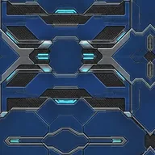
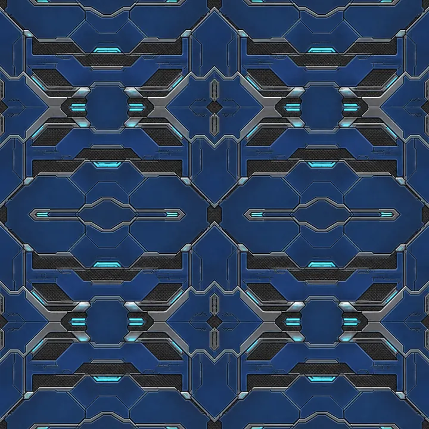
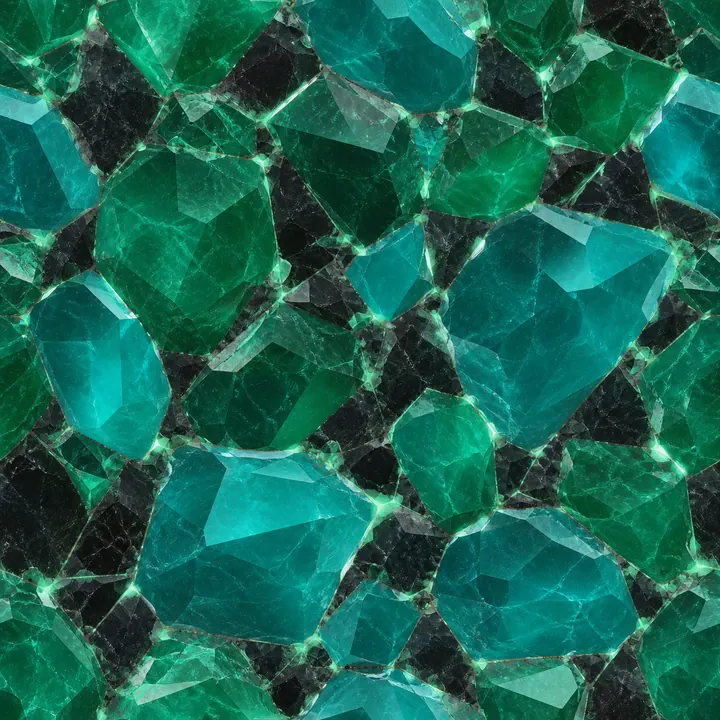
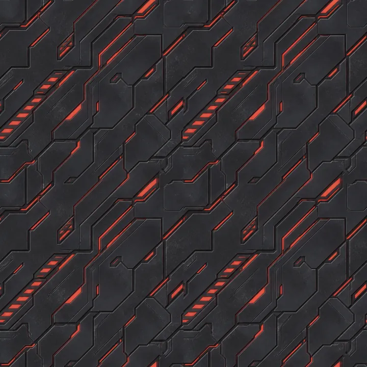

Three obstacle behaviours
Fixed gates, gates that phase in after a preview, and moving gates that sweep, shutter or reverse. Gaps narrow with distance.

Alien FlyingWillowinWorlds game pageFly the tunnel. Find the gap.
An endless flight through an alien tunnel. Steer around the wall, slip through the gaps in each gate and collect crystals to charge a shield.
The Unity project has a full run loop, a hangar and settings screens; there is no public build yet.
Drag to move around the inside of the tunnel. On desktop, use A and D or the arrow keys.
Every gate leaves a gap. Fixed, phasing and moving obstacles appear as the run goes on, and the gaps narrow with distance.
Crystals add score and combo and charge a shield you raise with a double tap. The run ends on a collision, and your best score is kept.
Fixed gates, gates that phase in after a preview, and moving gates that sweep, shutter or reverse. Gaps narrow with distance.
Collecting crystals charges a shield. A double tap raises it.
Score comes from distance, crystals, cleared gates and near misses, with a combo multiplier.
The tunnel changes theme as you travel: cryo conduit, biomech veins, reactor core and void rift.
Four cosmetic hulls, bought with Xeno collected in runs. They give no gameplay advantage.
Sound, adaptive music, haptics and reduced motion can each be switched on or off. Progress is stored on the device.
These are goals for the project, not release dates.
Material texture previews from the project. They are textures, not gameplay screenshots.



An endless tunnel flyer for phones. You steer around the inside of an alien tunnel, pass through gaps in obstacle gates and collect crystals for score and a shield.
Not yet. Alien Flying is an early prototype with no public build. Android and iOS are the intended platforms.
Follow WillowinWorlds on the social channels linked on this page, or email willowinworlds@gmail.com to ask for updates on Alien Flying.
Voting will open on the studio's channels, so following WillowinWorlds is the way to take part.